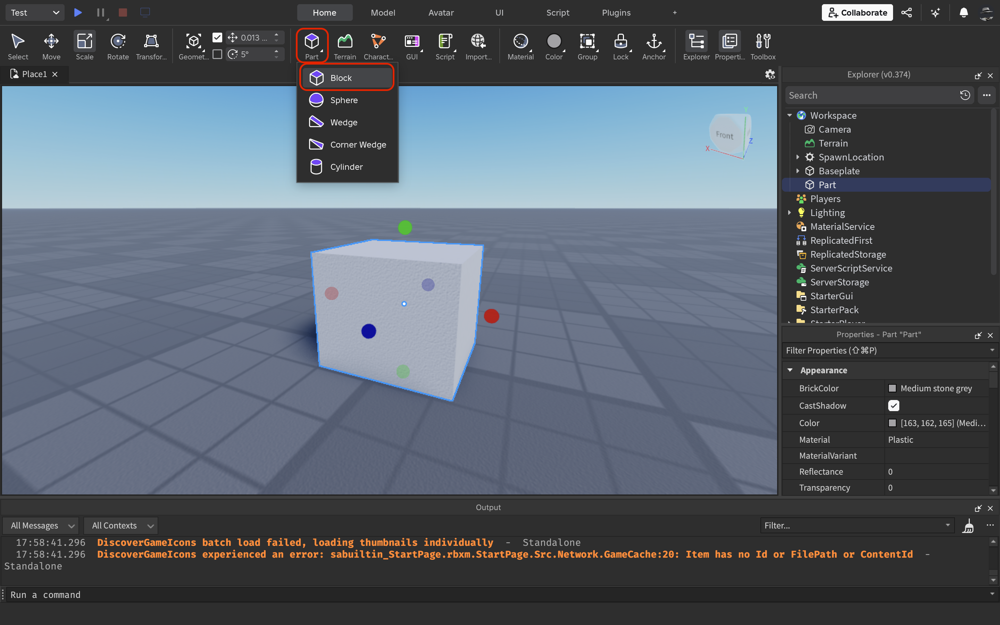

Step 1: Installing Studio
Download Roblox Studio from the official Roblox Create portal. After installing, log in with your Roblox account.
Step 2: Adding a Part
In Roblox Studio, click the Part button in the Home tab to add a basic block to your game world.
TIP: Use the Move, Scale, and Rotate tools to position your part.
Step 3: Writing a Script
Right-click the part, click Insert Object, then select Script. Paste the following basic code:
print("Hello, Roblox world!")This script runs when the game starts and logs text to the output.
Learn more about Scripts →Step 4: Publish Your Game
Click File > Publish to Roblox As... to upload your experience. Give it a name and description to share it with others.